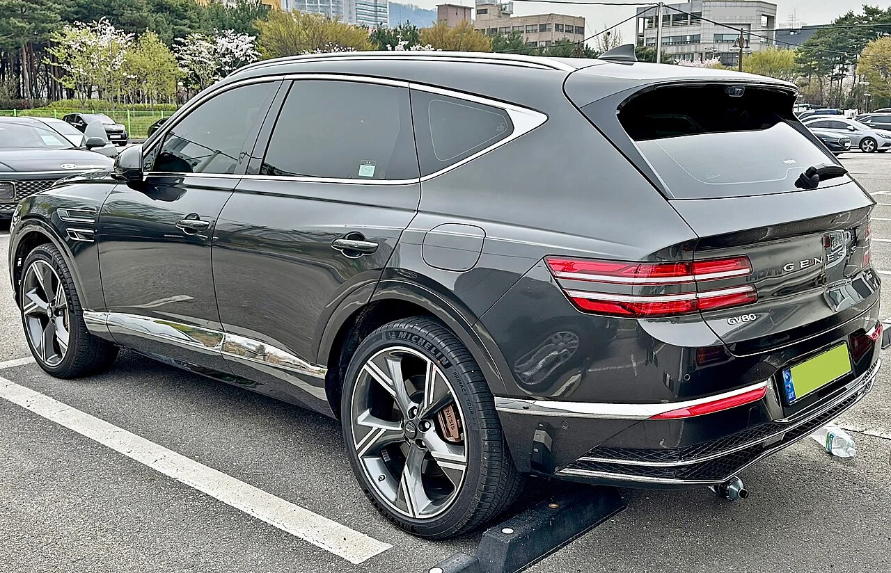

▲ 2026년 9월 하이브리드 사양이 새로 추가되는 제네시스 GV80 ⓒ Benespit, Wikimedia Commons (CC BY-SA 4.0)
제네시스가 브랜드의 대표 대형 SUV 'GV80'에 하이브리드 파워트레인을 추가해 2026년 9월 국내 출시를 확정했습니다. 주목할 점은 제네시스가 2025년 이후 출시하는 모든 신차를 전기차로만 내놓겠다고 공언했던 브랜드라는 사실입니다. 전 세계적인 전기차 수요 둔화(캐즘) 여파로 판매가 급감하자, 결국 하이브리드 파워트레인을 앞세워 선언을 스스로 뒤집는 모습입니다. 전략 선회의 배경과 새 파워트레인, 향후 계획까지 정리했습니다.
1. 왜 선언을 뒤집었나 — EV 캐즘이 바꾼 제네시스의 로드맵

▲ GV80 후면부. 제네시스는 2025년 이후 신차를 전기차로만 출시하겠다고 밝힌 바 있다 ⓒ Benespit, Wikimedia Commons (CC BY-SA 4.0)
제네시스는 앞서 2025년 이후 출시하는 모든 신차를 전기차로만 선보이겠다고 공언한 브랜드입니다. 그러나 전 세계적인 전기차 수요 둔화, 이른바 'EV 캐즘'의 여파로 판매량이 크게 줄어들자, 결국 GV80의 2세대 완전변경 출시를 전면 연기하고 대신 하이브리드 파워트레인을 얹어 현행 모델의 수명을 약 3년 더 연장하는 쪽으로 방향을 틀었습니다. 토픽트리 보도에 따르면, 이런 단계적 전동화 전략은 전동화 전환에 상대적으로 보수적인 40~50대 고객층에게 적응할 시간을 주려는 목적도 있다는 설명입니다.
2. 파워트레인 — PHEV 대신 택한 '프리미엄 시리즈 하이브리드'

▲ GV80 하이브리드는 2.5리터 터보 엔진에 전기모터 2개를 결합한 시리즈 하이브리드 방식을 채택했다 ⓒ HJUdall, Wikimedia Commons (CC0)
GV80 하이브리드는 2.5리터 터보 가솔린 엔진에 P1·P2 전기모터 2개를 조합한 시스템을 탑재합니다. P1 모터는 엔진 시동과 발전을, P2 모터는 실제 구동과 회생제동을 담당하는 구조입니다. 여기에 기존 대비 토크 용량을 약 25% 늘린 신개발 8단 하이브리드 전용 변속기가 맞물립니다. 전자식 사륜구동 시스템과 승차감을 다듬는 e-VMC 2.0, 야외활동에 활용할 수 있는 '스테이 모드', V2L 외부 전력 공급 기능도 함께 제공됩니다.
유카포스트 보도에 따르면, 제네시스는 경쟁 브랜드인 BMW·벤츠가 주력하는 플러그인 하이브리드(PHEV) 대신 배터리 충전 없이도 쓸 수 있는 가솔린 기반 시리즈 하이브리드 방식을 택했는데, 이는 "정숙성과 응답성, 내구성"을 앞세운 '프리미엄 전동화'를 지향하기 위한 선택이라는 설명입니다. 공인 복합연비는 13.5km/L로 발표됐으며, 실제 주행에서는 15~16km/L 수준이 나올 것으로 예상됩니다.
3. 출시 일정 & 향후 계획 — 2027~2028년엔 파워트레인이 4개로

▲ GV80 실내. 하이브리드 도입 이후 2027~2028년에는 완전변경을 거쳐 4종의 파워트레인으로 확대될 예정이다 ⓒ Damian B Oh, Wikimedia Commons (CC BY-SA 4.0)
GV80 하이브리드는 2026년 9월 국내 출시를 시작으로, 같은 해 4분기 G80 하이브리드가 뒤를 잇고 2027년에는 GV70 하이브리드까지 라인업이 확대될 예정입니다. 미국 등 해외 시장 판매는 2027년부터 순차적으로 시작될 전망입니다.
더 눈여겨볼 대목은 2027~2028년 예정된 GV80 완전변경입니다. 이때는 가솔린(2.5L·3.5L 터보), 하이브리드(T-MED II 시스템), 900km 이상을 노리는 EREV(주행거리 연장형 전기차), 그리고 113.2kWh 배터리로 700~800km 주행거리에 600마력 이상을 내는 순수 전기차까지 총 4가지 파워트레인으로 라인업이 확대될 계획입니다. 가격은 현재 6,790만~9,380만 원인 GV80이 완전변경 이후에는 3.5T 사륜구동 최상위 트림 기준 9,000만~1억 원대까지 오를 것으로 전망됩니다.
결국 제네시스의 이번 선언 번복은 '전기차 올인'이라는 이상과 '당장 팔리는 차'라는 현실 사이에서, 하이브리드를 다리 삼아 시간을 벌겠다는 판단으로 읽힙니다. 전기차 전환의 방향 자체를 포기한 것이 아니라, 소비자가 따라올 시간을 벌면서 가솔린·하이브리드·EREV·순수 전기차를 모두 갖춘 완전한 라인업으로 넘어가겠다는 것이 제네시스의 청사진입니다.